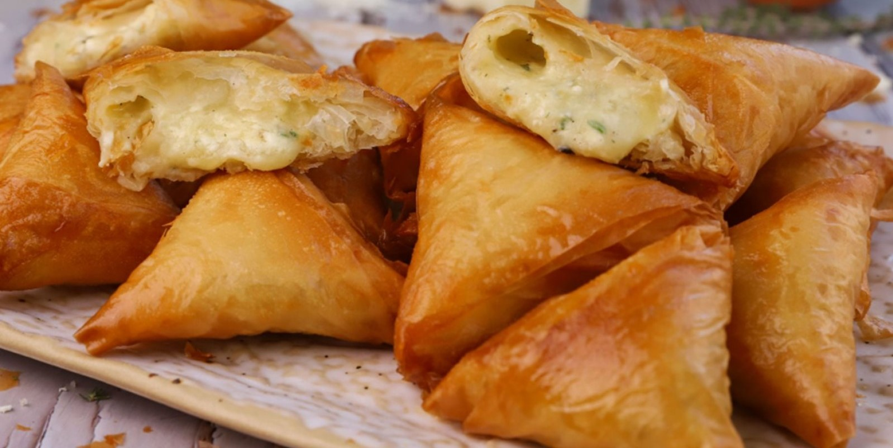

The Best Tiropitakia Recipe
Tiropitakia or tyropitakia (Greek: τυροπιτάκια, "little cheese-pies") are mini versions of a tiropita (or tyropita). Tiropita is a pie made of flaky dough, like phyllo, and filled with cheese. Crunchy, cheesy, and delicious, tiropitakia are a great breakfast, dinner, or snack! There are many variations of tiropitakia, some including meat or spinach, and while typically savory, they are often topped with honey. They are most commonly bought at local bakeries, and their simplicity makes them a very common food in Greek households.
In Greece, the pie filling usually has a feta cheese and egg base. The pies are served in small triangle or semi-circle shapes, depending on the dough being used. This version of the recipe is adjustd for cheese and dough that can be found in the United States, so we will be using frozen phyllo dough, feta cheese, and mozzarella pearls. While this recipe is not exactly the same as my grandma's, it is just as delicious!
Ingredients for 16
- 10 oz feta cheese
- 7 oz mozzarella pearls
- 5 oz phyllo dough sheets
- 4 branches fresh dill
- 1 egg
- pepper
- olive oil
Let's cook!
- Unfreeze the dough and make sure it's at room temperature to the touch.
- Cut up the dill into small pieces - it's okay to have a lot, the more the merrier.
- In a mixing container, add the feta cheese, the mozzarella pearls, the egg, the dill, and a good amount of pepper.
- Mix well. If the mix isn't sticking together, add another egg. If it's too thick, add some milk.
- Unroll the dough and lay it horizontally.
- Cut the dough sheets vertically into three stacks.
- Put some olive oil in a small bowl and grab a pastry brush or spoon.
- Place a strip of the dough on your surface, and cover it with olive oil. Repeat this until you have 4 strips.
- Take a tablespoon of the filling and put it on one side of the prepped dough.
- Preheat the oven to 350 degrees Farenheit.
- Fold the dough into triangles as follows:
| Step 1: |
|
| Step 2: |
|
| Step 3: |
|
| Step 4: |
|
- Once the tiropitakia are all folded and the oven is preheated, arrange the pies on a big tin pan and insert them into the oven on the highest shelf.
- Leave to bake for 20 minutes, then check the tiropitakia. If they are a little pale, leave them to crisp for a minute or two longer. When golden, remove from the oven.
- Leave to cool, and enjoy!
Back to Main Page